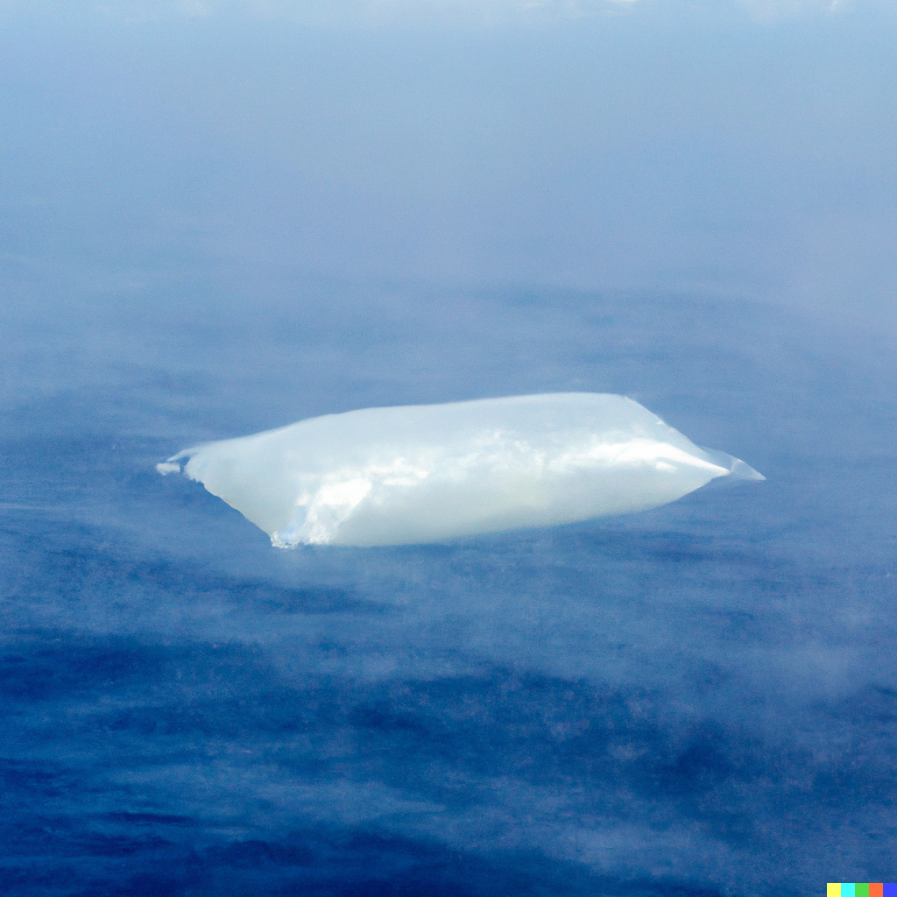
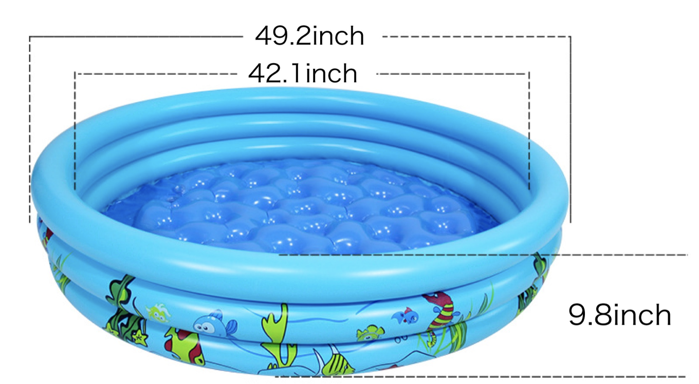

I’ve officially been at this for over two years. I missed the second anniversary last time around! Such is the consequence of lacking an editorial staff or organizational constraints. Nevertheless, life has certainly been interesting throughout these installments. I remain committed to my mission, educating non-scientists. Still, I add a secondary goal: prodding scientists to tackle challenging problems holistically, not just the ones that have funding for their pet projects in their specialty.
Because it’s been a few weeks, let’s review where we are on the “third solution” for climate control 1 . This proposed solution is enabled by the same logic as the “first solution 2 ” but eliminates the need for a substantial energy source to desalinate seawater actively. 3
Conceptually, it began on paper as envisioning an industrial-scale cistern, a passive method of collecting and storing rainwater where it is otherwise wasted, namely when it falls as rain over the ocean. Previously, the size of the cistern was arbitrarily chosen to be the size of a supertanker (400 acre-feet) and constrained by asking that it be filled in one month (on average) when positioned in the rainy but calm intertropical convergence zone (ITCZ) near the Equator. Initially, the idea was to create a funnel so rainfall could be concentrated before collection and hold it aloft using a donut-shaped hydrogen balloon.
Setting aside the need to distribute the collected water to arid land, where it can be used to support agriculture, let’s continue with the collection thread.
So far, we’ve established a few things:
-
The aerodynamics of a light system with that much surface area aloft is likely to be prohibitive since a simple funnel would double as a giant kite, and
-
The intermittency of rainfall in the ITCZ does not doom the idea.
As I was tracking down someone to help determine whether aerodynamics is, in fact, a prohibitive limitation, a thought occurred to me: Is an airborne funnel or a ship even necessary? A funnel directs the flow to a central collection point. Initially, I arbitrarily chose a “supertanker” form for collection and a one-month cycle time simply because my intuition said that the collection vessel would be expensive, such that it would need to make several runs per year to make economic sense.
Stepping back now, the only immutable requirement of a successful collection system is to prevent the rainwater from mixing with seawater, the irreversible process that squanders the solar energy used to desalinate it naturally. A plastic bag would do! And if cheap enough, it could take longer to collect rainwater.

Here’s a relevant model, actually sort of the one DALL-E created for the last issue:

Yes, this is an inflatable kiddie pool! The above pool can be purchased for $3.60 in bulk, manufactured in China . Filled to the top, it holds just under 60 gallons.
In chemical engineering, there is a rule of thumb scaling factor that approximates “economies of scale”. As the volume increases, the cost increases to the power of 0.6 4 . So, we can estimate the manufacturing cost of an inflatable pool the size of a supertanker. Such a pool would be 100 feet deep and 450 feet in diameter (an open area of around 4 acres), meaning it'd take years to fill if left floating in the ITCZ! But, based on the scaling factor, it would only cost $23,000 to manufacture. Even if disposable, that’s a cost of under $60 per acre foot of water, lower than the subsidized cost of Colorado River water in California.
This sort of approach may have legs. A better visual is probably to make the sides 10 feet tall (as a breakwater) and expand the collection area accordingly. That would increase the diameter to 1,420 feet. By my calculation, that would increase the cost to about $35,000 (based on an increased surface area), but the pool would only need to be at sea for ten months before it overflowed. That’s $86 an acre-foot collected (at the extreme, assuming that the pool is disposable), leaving plenty of headroom for delivery.
Of course, these are still scratches on the back of a virtual envelope. Nevertheless, I remain intrigued.
Namely, excess carbon can profitably be removed from the atmosphere by irrigation of arid soil. This leads to increased carbon sequestration (as economically valuable soil organic carbon) and allows the land to be used for financially practical agriculture, offsetting the inevitable cost of capturing already-emitted carbon dioxide. Such an approach can be scaled and offers the opportunity to control the composition of Earth’s atmosphere and return it to its pre-industrial state while turning a profit, even without artificial carbon markets.
[See earlier posts in this series]
[See earlier posts in this series]
If you want to get into the details, the materials you pay for represent the surface area, but production capacity is defined by volume, so it’s roughly the ratio of a power of 2 (area) to a power of 3 (volume).